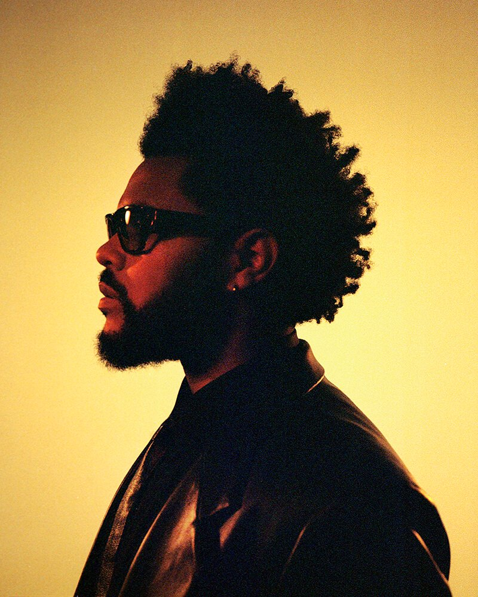
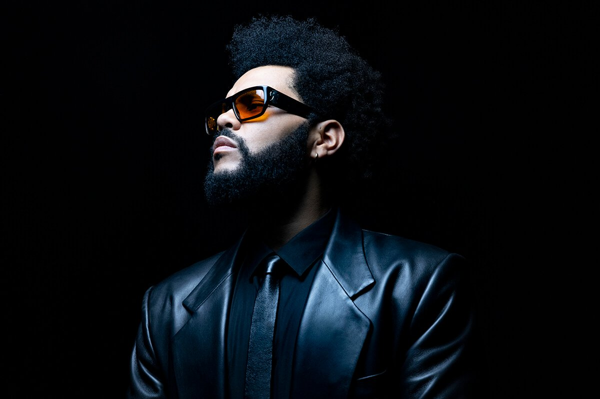

Welcome to my site
The Weeknd:Singer of this era...
Intro:
Abel Makkonen Tesfaye (Amharic: አበል መኮነን ተስፋዬ; born February 16, 1990), known professionally as the Weeknd,
is a Canadian singer, songwriter, and actor.[2] Known for his sonic versatility and dark lyricism, his music
explores escapism, romance, and melancholia, and is often inspired by personal experiences.[3] His
accolades include four Grammy Awards, twenty Billboard Music Awards, seventeen Juno Awards, six American
Music Awards, two MTV Video Music Awards, a Latin Grammy Award, and nominations for an Academy Award and
a Primetime Emmy Award.

Early life:
Abel Makkonen Tesfaye[a] was born on February 16, 1990, in Toronto, Ontario.[18] He is the only child of
Ethiopian immigrants Makkonen Tesfaye and Samrawit Hailu,[b] who separated shortly after his birth.[20][21]
He was brought up in the district of Scarborough by his mother and grandmother.[18][22] He has an estranged
relationship with his father, in which he explained to Rolling Stone, "I saw him vaguely when I was six, and
then again when I was 11 or 12, and he had a new family and kids. I don't even know where he lived — I'd see
him for, like, a night. I'm sure he's a great guy. I never judged him. He wasn't abusive, he wasn't an
alcoholic, he wasn't an asshole. He just wasn't there."[21]
Tesfaye was raised as an Ethiopian Orthodox.[21][23] When asked whether or not he was still religious, he
stated to Variety in 2020, "I dunno...everything is a test, and if you are religious or spiritual, you have
to go through things."[24] His native language is Amharic, which he learned through his grandmother.[25] He
later became fluent in French by attending a French-immersion school.[26] He was further educated at West
Hill Collegiate Institute and Birchmount Park Collegiate Institute.[27]
When he was 17, Tesfaye dropped out of school and moved to an apartment in the neighbourhood of Parkdale with
two friends; including his best friend and now creative director La Mar Taylor.[28] He has described this period
as being like the 1995 film Kids "without the AIDS", as they lived a hedonistic lifestyle.[18][29] He has also
experienced homelessness and was incarcerated on several occasions during this time, which encouraged him to
"smarten up, to focus."[30][31]
Tesfaye often used drugs and abused illegal substances such as ketamine, cocaine, MDMA, magic mushrooms, and
cough syrup.[32] In December 2016, he stated that drugs were a "crutch" for him when it came to writing music.
[33] In August 2021, during a cover story with GQ, he described himself as being "sober lite", meaning that he
has stopped using drugs with the exception of marijuana. He also noted that he drinks alcohol occasionally,
stating: "I'm not a heavy drinker, as much as I used to be. The romance of drinking isn't there."
